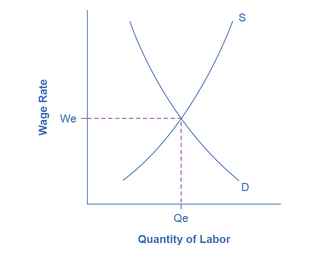
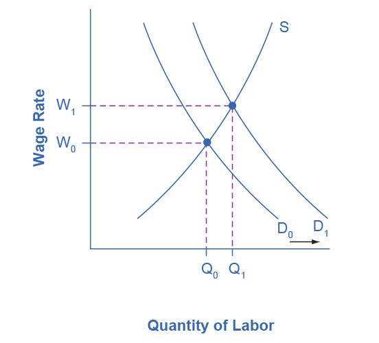
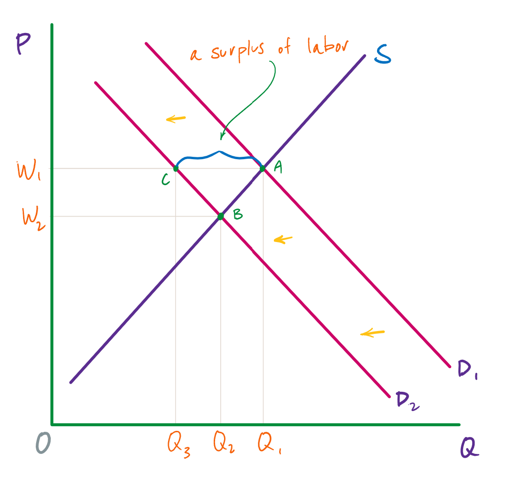

Categories of unemployment
Do we want the unemployment rate to be zero? The answer to this question is actually, “no,” and as you can see in figure 1, the unemployment rate has only been below 3.0% once since 1948. (During the last three years of World War II, it was below 2.0%, while at the other extreme, for several years during the Great Depression, it was over 20%.(1) )
We’ll return to why we don’t want the unemployment rate to drop all of the way to zero, but first, let’s investigate two of the three categories of unemployment.
Frictional unemployment
In a market economy, it is always the case that some companies are barely surviving or are going out of business altogether. At the same time, other companies are thriving and expanding. In a perfect world, all of the people who were laid off would immediately find new jobs with the companies that need more workers. In the real world, however, even if the number of job seekers is equal to the number of job vacancies, it takes time for unemployed workers to find out about new jobs, interview and figure out if a particular job will be a good match, and then, in some cases, move to a different part of the state or country.
In 2019, for example, there were typically about 6 million unemployed people at any given time in the U.S. Even though about two-thirds of those unemployed people found a job in 14 or fewer weeks, the unemployment rate did not change much during the year because those who found new jobs were largely offset by others who lost jobs.
The unemployment that occurs because workers are move between jobs is called frictional unemployment. Frictional unemployment is not inherently a bad thing. It takes time to match the people who are looking for employment with the best job for each of them—or, at least, with a job that is a reasonably good match for each of them. For individuals and companies to be successful and productive, people should find the job for which they are best suited, and not just take the first job offered to them because it was the first.
Also included in frictional unemployment are recent college graduates who have just entered the labor market and are looking for a job. The frictional unemployment that results from people moving between jobs in a dynamic economy probably accounts for one to two percentage points of total unemployment.
Structural unemployment
Some people are unemployed because they lack the skills that they need for a new job. In some cases, the skills that they have are no longer needed—for instance, accountants who are only able to use adding machines and paper ledgers. In other cases, the unemployed workers never acquired many (or any) skills in the first place—as is generally the case with high school dropouts. Unemployment that is caused by a mismatch between the skills that workers have and the skills that are needed is called structural unemployment.
Structural unemployment does have a high cost. Many of the people who are unemployed for structural reasons will have difficulty finding new jobs—even if they are given the opportunity to acquire new skills. But as with frictional unemployment, it is part of a healthy and dynamic economy. Ultimately, it is best for society to have the people with the most in-demand skills working. Education seems to be the key in minimizing the amount of structural unemployment. Individuals who have more years of education are (a) more likely to have the skills that are needed for current jobs and (b) have an easier time acquiring new skills if the need arises.
So, to answer our original question on this page, an unemployment rate of zero would not be ideal because it would mean rushing people into jobs for which they may not be ideally suited and employing workers who lack the skills to be as productive as we would like. It would also mean that, if everyone in the labor force had already been stuck into a job, employers would have difficulty hiring new workers in a timely fashion.
The natural rate of unemployment
So, even when an economy is functioning optimally, there will be some unemployment caused by frictional and structural unemployment. This amount of unemployment is called the natural rate of unemployment. The natural rate of unemployment is not “natural” in the sense that water freezes at 32 degrees Fahrenheit or boils at 212 degrees Fahrenheit. The natural rate of unemployment is not a physical and unchanging law of nature. It is, however, relatively constant, and currently, it is probably around 4%. When the actual unemployment rate is equal to the natural rate of unemployment the economy has achieved full employment.
Over time, however, the natural rate of unemployment can change—as it might, for instance, if unemployed workers have easier access to job opportunities than they did before the use of the internet became widespread, or if more of the skills that are prevalent in the labor force happen to match the skills that firms want.
When the unemployment rate is above the natural rate, then, in addition to frictional and structural unemployment, there is some amount of what is called cyclical unemployment.
Cyclical unemployment
Cyclical unemployment is unemployment caused by downturns in the economy. Figure 1 is a graph of both GDP (the blue line) and the unemployment rate (the red line). Recall that the gray bars represent recessions. As you can see, each recession is accompanied by a surge in unemployment, which then begins to decline once the recession is over. The unemployment in these surge (on the way up and back down) is cyclical unemployment.
There are some issues with putting a precise percentage on the natural rate of unemployment, plus some complexities that we won’t get into here about how such an estimate is made. But the graph in figure 3 is useful for conceptualizing the addition of cyclical unemployment to frictional and structural unemployment. The red line, the “noncyclical rate of unemployment,” is frictional and structural unemployment, which together constitute the natural rate of unemployment. The blue line is the actual unemployment rate. So, all of the unemployment above the red line is cyclical.
For instance, in January 2011, the natural rate of unemployment was 4.8% while the actual rate of unemployment was 9.1%. Consequently, cyclical unemployment was 4.3%.
What is going on when the actual rate of unemployment is below the natural rate of unemployment—for instance, as has been the case since January of 2022—is interesting. Earlier, we defined the natural rate of unemployment as the percentage of unemployment caused by frictional and structural unemployment. Alternatively, we can define it as the percentage of unemployment when cyclical unemployment is at zero (i.e., when no unemployment is caused by recessions or other downturns in the economy).
So, when the actual rate of unemployment is below the natural rate, then—according to estimates anyway—there is zero cyclical unemployment and there is less frictional or structural unemployment than there should be (given other features of the economy). In other words, some workers are jumping into jobs that don’t especially suit them or some workers have jobs even though they lack the precise skills for them.
The puzzle of cyclical unemployment
Frictional and structural unemployment are unavoidable. According to the supply-and-demand model, cyclical unemployment is avoidable, and the fact that it is relatively common presents something of a puzzle.
To understand this puzzle, let’s think about the supply and demand for labor (figure 4). Supply in this case refers to the supply of labor, and so the “suppliers” are workers. The demand for labor, on the other hand, comes from firms. Price is the price of labor—that is, wages—and the point where supply and demand intersect gives us the equilibrium price (i.e., the equilibrium wage) and the equilibrium quantity.

When firms are expanding and need to hire more workers, then the demand for labor increases. (See figure 5.) Supply may increase in this scenario if people who weren’t previously in the labor force enter the labor force, but let’s assume that supply doesn’t change. Since the demand curve shifts to the right, the equilibrium wage and equilibrium quantity both increase. And this is generally what happens in the real world.

When firms are contracting instead of expanding, however, they will slow hiring or lay off some of their workers. This is a decrease in demand, and the demand curve will shift to the left. This is shown in figure 6. Since we now have a new equilibrium, according to the supply-and-demand model, the prevailing wage should fall from W1 to W2. But what we often see is that the wage remains unchanged. Just as with supply and demand for any good or service, this creates a surplus—in this case, a surplus of labor, which is unemployment.

It is possible that people who are unemployed are not willing to work at the current equilibrium wage, say $15 an hour, but would be willing to work at a higher wage, like $20 per hour. The monthly Current Population Survey would count these people as unemployed because they say they are ready and looking for work (at $20 per hour). However, from an economist’s perspective, these people are choosing to be unemployed.
Probably a few people are unemployed because of unrealistic expectations about wages, but they do not represent the majority of the unemployed. Instead, unemployed people often have friends or acquaintances of similar skill levels who are employed, and the unemployed would be willing to work at jobs and wages similar to what those people are receiving. However, the employers of their friends and acquaintances do not seem to be hiring. In other words, these people are involuntarily unemployed. What causes the involuntary unemployment that is over and above frictional and structural unemployment?
videos: cyclical unemployment, sticky wages
Wages are sticky downward
The economic conundrum here is that while wages increase with relative ease (when demand shifts to the right or supply shifts to the left), wages don’t easily or often decrease, even when they are above the equilibrium wage and lowering them would decrease unemployment. This failure to easily adjust downward is referred to as sticky downward. The wage might not be absolutely stuck at the higher level, but it doesn’t fall easily—hence, it is sticky.
Unions and the minimum wage
One set of reasons why wages may be sticky downward involves economic laws and institutions. If a worker is receiving the minimum wage and no more, it is illegal to reduce his or her wages. For union workers operating under a multiyear contract with a company, wage cuts might violate the contract and create a labor dispute or a strike.
Minimum wages and union contracts are not, however, the reason why wages are sticky downward for the U.S. economy as a whole. After all, out of the 73.3 million or so employed workers in the U.S. economy who earn wages by the hour, only about 1.1 million—less than 2% of the total—are working for (or in some special cases below) the minimum wage. Similarly, labor unions represent only about 12% of American wage and salary workers. In other high-income countries, more workers may have their wages determined by unions or the minimum wage, but in the United States, these two factors affect only about 15% or less of the labor force.
Economists looking for reasons why wages might be sticky downwards have focused on factors that may characterize most labor relationships in the economy, not just a few. There are a number different possible explanations. We will review five of them here.
Implicit contracts
One argument is that even employees who are not union members often work under an implicit contract. This is not an actual contract, but rather an understanding that the employer will try to keep wages from falling when the economy is weak or the business is having trouble, and the employee will not expect huge salary increases when the economy or the business is strong.
This wage-setting behavior acts like a form of insurance: the employee has some protection against wage declines in bad times, but he or she pays for that protection with lower wages in good times. Clearly, this sort of implicit contract means that firms will be hesitant to cut wages, lest workers feel betrayed and work less hard or even leave the firm.
The efficiency wage theory
According to the efficiency wage theory, the productivity of workers depends on their pay, and so employers will often find it worthwhile to pay their employees somewhat more than the supply-and-demand model dictates. One reason for this is that employees who receive better pay than others will be more productive because they recognize that if they were to lose their current jobs and had to find a new one, they would likely suffer a decline in salary.
As a result, they are motivated to work harder and to stay with their current employer. At the same time, employers know that it is costly and time-consuming to hire and train new employees, so they would prefer to pay workers a little extra now rather than lose them and have to hire and train new workers. Thus, by avoiding wage cuts, the employer minimizes the costs associated with training and hiring new workers and gets the benefits of well-motivated employees.
The adverse selection of wage cuts argument
If an employer reacts to poor business conditions by reducing wages for all workers, then the best workers—those with the best employment alternatives at other firms—are the most likely to leave. The least attractive workers—those who have fewer employment alternatives—are more likely to stay. Consequently, firms are more likely to choose which workers should depart, through layoffs and firings, rather than trimming wages across the board. This is the adverse selection argument.
The insider-outsider model
In the insider-outsider model of the labor force, those already working for firms are “insiders,” while new employees, at least for a time, are “outsiders.” A firm depends on its insiders to keep the organization running smoothly, to be familiar with routine procedures, and to train new employees. Cutting wages will alienate the insiders and damage the firm’s productivity and prospects, and so the firm’s preference is to lay off the newer employees instead.
The relative wage coordination argument
According to the relative wage coordination argument, most workers might be willing to accept their own wages declining during bad economic periods (and when demand for labor is decreasing) as long as everyone else’s wages decline as well. (That is, not just everyone in their firm, but everyone in the labor force, or at least everyone in their segment of the labor force.)
But since there is no way for a decentralized market economy to implement such a plan, workers confronted with the possibility of a wage cut will worry that other workers are not experiencing a similar wage cut. Consequently, receiving a wage cut means (or is perceived to mean) being worse off both in absolute terms and relative to others, and so workers fight hard against wage cuts.
The theories
These theories of why wages tend not to move downward differ in their logic and their implications, and figuring out the strengths and weaknesses of each theory is an ongoing subject of research in economics. All of these theories, however, explain why the tendency is to make some workers unemployed instead of simply lowering wages across the board when the economy or a firm is contracting.